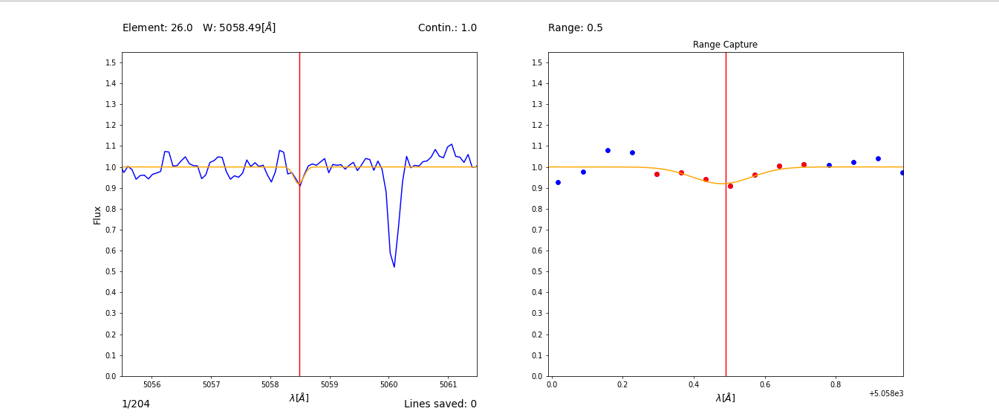

Disponibles
Equivalent Width Measurement
v2.0 · listo
Python · IRAF-free
Interactive tool for measuring equivalent widths of spectral lines in high-resolution spectra. Real-time visualization with continuum fitting and integration range selection. Developed to replace IRAF-based workflows with pure Python.
interactive continuum fitting
multiple lines per session
automatic CSV export
dual real-time visualization
compatible VLT · Magellan · APOGEE

→ Ver códigoCATCH — Sky & Plane Data Capture
v2.0 · listo
Python · Numpy
Tool for capturing astronomical objects within geometric regions. Three modes: spherical circle in RA/Dec coordinates using real angular distance, flat circle for proper motion or cartesian data, and flat square. Returns captured arrays with automatic plot and output file. Designed to be imported from larger pipeline scripts.
spherical RA/Dec circle
flat circle · proper motion
flat square
automatic plot PNG
importable functions
→ Ver código
En desarrollo
Radial Velocity Corrector
próximo
Corrección automática de velocidad radial para espectros de estrellas individuales. Integración con catálogos de Gaia DR3 para corrección heliocéntrica y de membresía en cúmulos.
Cluster Membership Classifier
próximo
Clasificación probabilística de membresía estelar en cúmulos globulares combinando cinemática de Gaia y abundancias químicas de APOGEE. Basado en Gaussian Mixture Models.
Spectral Survey Crossmatch
próximo
Cruce automático entre catálogos de surveys (APOGEE, Gaia, 2MASS) con limpieza de duplicados, corrección de coordenadas y exportación en formatos compatibles con TOPCAT y Astropy.
Chemical Abundance Plotter
próximo
Visualización de patrones de abundancias químicas para múltiples cúmulos simultáneamente. Comparación con modelos de evolución química y literatura publicada.